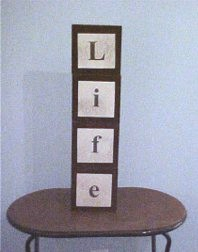
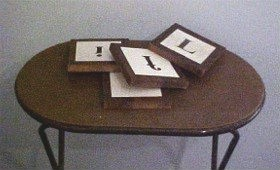

Life in the Hot Lane
Now that we have a basic understanding of thermodynamics from our last two essays, we can begin to see how thermodynamic principles apply to the origin of life.
|


|
Sometimes, when giving a lecture, I prepare the stage before people arrive. I set up a rickety TV tray somewhere near the front of the stage, and I place upon it the wooden Building Blocks of Life.
These are square blocks made from ¾ inch (2 cm) pine boards. They are 6 inches (15.5 cm) on each side. They have the letters "L", "i", "f", and "e" printed on the front side, and those same letters printed backwards on the back side. Each block can be set on edge in one of eight different ways.
It is, as you can imagine, rather difficult to stand them on edge as shown in the picture, but it can be done (not necessarily on the first try) with a steady hand.
|
These blocks illustrate two lessons. The first is about probability. The odds against the blocks being stacked randomly to make "Life" are 98,303 to 1. (The proof is left as an exercise for the reader.) The second is about thermodynamics, which is what we want to focus on this month.
The blocks are very unstable, and during the course of the lecture they may fall down spontaneously because of a gust of air from the air conditioner, or from slight motions of the stage caused by someone walking across it. If not, I will "accidentally" brush gently against the TV tray, causing the tower to collapse with a loud noise.
The Fall
Why does the tower fall down? You should know from our previous two essays it is because heat is flowing from a warmer place to a colder place, increasing the uniformity of heat (entropy) in the universe. You should know that, but it isn't obvious, is it?
Remember from last month's essay that heat is like money. It is the universal currency of energy. Heat can take the form of potential energy, kinetic energy, nuclear energy, chemical energy, etc.
Before the lecture began, I assembled the Building Blocks of Life into a tower. I stored potential energy (heat) in those blocks by lifting them higher than the TV tray. In essence, I organized some heat by localizing it in the blocks. Heat doesn't like to be organized. It will disorganize itself given the opportunity.
The potential energy in the tower of blocks is localized heat. Heat escapes to the environment when a slight imbalance provides the opportunity for it to do so. The heat, in the form of potential energy turns to kinetic energy (energy of motion) as the blocks fall, imparting some kinetic energy to the surrounding air. The remaining heat turns into sound waves when the blocks hit the tray. A negligible amount of heat turns into warmth when the wooden blocks rub together as they fall.
When the tower falls, it interrupts my lecture. I try to get the tower to stand up again by bumping the TV tray. I jerk the tray all around, adding as much energy as I can, but I can never get all four blocks to stand up on edge on top of each other. As a matter of fact, in all the times I have tried the experiment, I have never been able to get even a single block to stand on any edge just by shaking the TV tray.
The blocks are an "open system" which is receiving energy from an outside source (me). Evolutionists would like you to believe that adding energy from an outside source somehow invalidates the Second Law. But you know intuitively that no matter how much I shake the TV tray, the blocks won't build themselves back into a tower. You can add all the outside energy you want, but the blocks won't stand up. Blocks always fall down.
Evolutionists might argue that the problem is that I tried to get all the blocks to stand up at once, or that I didn't shake the TV tray long enough. They say that if I shook the TV tray every hour of every day for billions of years, sooner or later one of the blocks might stand on edge. It might even be the "e" block, and it might even be in the proper orientation. Then, after more billions of years of shaking, the "f" block might stand on edge on top of the "e". Eventually, they say, given enough time, the entire tower could have been built by just shaking the TV tray.
Just to give them the benefit of the doubt, I set the "e" block up, and start shaking the TV tray. Guess what happens. The "e" block falls over the first time I shake the tray. Even if I set the "i", "f", and "e" blocks up on edge, on top of each other, I can't get the "L" block to jump up 18 inches and land on edge on top of the other three blocks. The other three blocks just fall down as soon as I shake the TV tray.
But the blocks were standing in a tower that spelled "Life" before they fell down. How did that happen? It happened because heat (energy) from an outside source (me) was transferred to the blocks purposefully before the lecture began. For heat to flow from a cold place to a hot place in an open system, work has to be done in a controlled manner. It isn't enough to just add energy (by shaking). Energy had to be added with a steady hand. As heat flowed from me to the blocks, the entropy of the blocks decreased, the entropy of my body increased, and the total entropy of the blocks and the entropy of my body increased in accordance with the Second Law. The block stood up in a tower that spelled "Life" because they were purposely (intelligently) designed to stand up in that configuration.
Origin of Life
So, what does this have to do with the origin of life? Well, according to the grand theory of evolution (molecules to man), the evolutionary process began with abiogenesis. Organic molecules spontaneously combined to form amino acids, which combined to form proteins, which spontaneously combined to form DNA, RNA, and cell membranes, etc. Somehow the first cell formed, which reproduced, and natural selection caused it to evolve into all the life forms we see today.
The theory of evolution is dead on arrival. Somehow simple molecules have to assemble themselves into more complex molecules (the "building blocks of life"), which assemble themselves into the first living thing, which reproduces itself, in order to get the evolutionary process started. Molecules will not assemble themselves this way because they have to obey the same laws of thermodynamics as the wooden Building Blocks of Life do.
DNA molecules, upon which all life (as we know it) is based, contain information and heat. We can't talk about everything at once, so we will have to refer you to the discussion of information in other essays 1 , 2. This month we will simply concentrate on the heat in a DNA molecule.
DNA molecules contain heat in the form of chemical energy. As everyone who listened to the expert testimony at the O.J. Simpson trial knows, DNA molecules are every bit as fragile as the Building Blocks of Life tower. The slightest bit of external energy breaks DNA molecules into simpler molecules, allowing the heat to escape into the environment.
Energy breaks molecules apart, allowing them to release even more energy. An unlit candle just sits there, holding its heat in the form of chemical energy until you bring a lighted match close to it. The warmth of the match breaks the wax molecules apart, releasing heat in the form of warmth, which provides the energy to break more wax molecules apart, which keeps the reaction going.
Organic molecules in food remain intact longer in the freezer than they do in the refrigerator. They remain intact longer in the refrigerator than they do sitting on the kitchen counter. That's why you keep your most perishable food in the freezer or refrigerator. Heat eventually breaks down DNA, RNA, sugars, proteins, and amino acids. It doesn't put them together.
Abiogenesis violates the Second Law of Thermodynamics because it requires heat to organize itself into localized chemical energy. Simple molecules have to combine into complex molecules which store more heat. Heat doesn't naturally flow from cold places to hot places.
Modern biology textbooks all talk about Stanley Miller's experiments of 50 years ago, in which he failed to demonstrate how life began. He knew that he would have to build a machine that would assemble simple gas molecules into amino acids, and he knew that this machine would need an external source of energy to force the molecules to combine. He initially used a spark for this purpose, but other forms of energy, such as ultraviolet light, were later used in similar experiments.
But Stanley Miller ran into the same trouble I have when I try to shake the Building Blocks of Life back into a tower. Shaking the tray knocks over blocks much more often than it sets them upright. Miller's electric spark broke molecules apart faster than it created them. That is why he had to get the molecules he created out of the spark-filled chamber before the next spark. Stanley Miller proved organic molecules (amino acids, proteins, sugars, etc.) don't occur naturally in sufficient purity and abundance to sustain life.
But sugars (and proteins, etc.) do exist in great quantity. If they didn't, we would all starve to death. Where do they come from? The wooden Building Blocks of Life don't naturally assemble themselves into a tower. But (for brief periods of time at the beginning of my lectures) the tower of blocks does exist. Does the tower violate the Second Law? My old Ford truck is falling apart, in obedience to the Second Law. Ford trucks don't naturally assemble themselves. But Ford trucks exist. Did the origin of my truck violate the Second Law?
Plants
It is no accident that the English word "plant" can refer to either a Ford factory or a tomato. Both kinds of plants manufacture things.
The Ford plant takes advantage of heat flowing from a hot place to a cold place to assemble parts into a truck. Like a Ford truck, a Ford factory will eventually deteriorate to the point where it falls apart. The plant won't fall together all by itself. Where did the Ford plant come from? It was consciously designed by Henry Ford to take advantage of heat flowing from a hot place to a cold place to assemble parts into Ford trucks. Ironically, some of the machines in the plant, and some of the truck parts, were brought to the plant in Ford trucks.
In the same way, a green plant manufactures sugars, proteins, and amino acids, by taking advantage of heat flowing from a hot place to a cold place. Ironically, it does that using machinery that is made out of sugars, proteins, and amino acids, which were made by green plants.
The biggest difference between manufacturing plants and green plants is that the green plants are much closer to 100% efficiency than any factory designed and built by man.
Did it Just Happen?
How do we know that Ford trucks and Ford plants were purposefully designed, and not just freaks of nature? We know it for the same two reasons that someone attending one of my lectures knows that the Building Blocks of Life tower didn't happen by chance. First, it is improbable that the tower would be arranged in the only way that spells "Life". Second, it requires carefully controlled energy to assemble the blocks in a way that concentrates heat in one place.
That is how we know that green plants could not have arisen by chance. First, they contain a highly improbable arrangement of parts which perform a useful function. Second, they contain parts that can only be constructed by controlled energy in a way that concentrates heat in one place. Furthermore, green plants are made up of molecules that can only have been built by green plants.
A living plant cannot form spontaneously any more than a Ford factory can. The complex molecules required for life can only be manufactured in a living plant made up of the complex molecules it produces. It is another form of the chicken-or-egg problem.
Random thermal action will break down complex organic molecules faster than it will assemble them. It could not have created the complex organic molecules required for life. Even if it could, random thermal action could not encode the complex molecules with the information necessary to make more organic molecules.
The Second Law assures us that towers, trucks, and living things, don't happen by chance.
Footnotes:
1
Disclosure, September 1998, "Information and Evolution", http://scienceagainstevolution.info/v2i12f.htm
2
Disclosure, January 2018, "New Genetic Data", http://www.scienceagainstevolution.info/v22i4e.htm